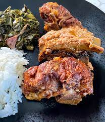

Pork Saute Recipe
Ingridients
- 1 tablespoon butter
- 1 (6 ounce) boneless pork loin chop, cut into small pieces
- 1 green onion, chopped
- ¼ cup chopped carrot
- ¼ cup chopped broccoli
- 1 large egg, beaten
- 1 cup cold cooked rice
How to Make It
- Step 1: Melt butter in a large non-stick skillet over medium heat. Add pork, green onion, carrot, and broccoli; cook and stir until pork is cooked through, 7 to 10 minutes. Transfer pork mixture to a bowl and return skillet to medium heat.
- Step 2: Stir egg into the skillet and scramble until completely set. Add pork mixture back into the skillet; stir in rice, peas, soy sauce, garlic powder, and ground ginger.
- Step 3: Cook and stir until heated through, 7 to 10 minutes.
- Step 4: Pour it into a bowl and enjoy!

Find out more: See links below for more info